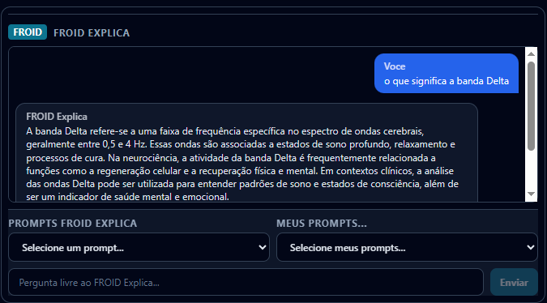
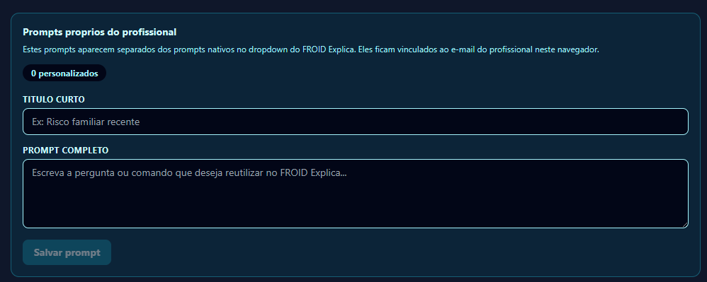

Le différenciateur FROID
Un assistant IA à génération augmentée par récupération (LLM-RAG) qui répond, en langage clinique, à tout ce dont le professionnel a besoin pour explorer les capacités de la plateforme pendant la séance — et qui croise votre portefeuille de patients avec le Data-Froid anonyme mondial.
Voir en action
Un exemple réel de l'interface : le professionnel pose une question et FROID Explique répond, avec des arguments, sur la lecture de la séance — avec les sélecteurs de prompts préconfigurés et de prompts personnalisés.

Comment ça marche
FROID Explique décide, à chaque question, si elle porte sur la connaissance (comment interpréter la lecture) ou sur les données (comment ce patient se compare à la base) — et l'oriente vers le bon moteur.
Génération augmentée par récupération (RAG) sur la base de connaissances vérifiée de FROID : 12 Zones, IPM, IDM, biomarqueurs, FACS et la bibliographie scientifique. Répond à « que signifie cette dissonance ? » avec des arguments — toujours sur des métriques déjà calculées, sans jamais générer les valeurs acoustiques.
Requêtes analytiques sur le Data-Froid anonyme : « ce patient est-il au-dessus de la moyenne en risque ? », « cas les plus similaires (top 5) », « interventions les plus efficaces pour des profils similaires ». L'intelligence de votre portefeuille rencontre l'intelligence de milliers de séances — sans DCP.
Chaque requête à FROID Explique reçoit l'état consolidé affiché à l'écran — la fenêtre clinique glissante de la Stabilisation Clinique de l'Écran (par défaut : 5 minutes, moyenne pondérée temporelle) — avec accès aux données brutes récentes si nécessaire. Ainsi, la réponse de l'IA porte sur exactement ce que le professionnel voit, sans écart entre l'écran et l'analyse.
Cette définition, comme d'autres algorithmes propriétaires, est documentée dans des références internes consultées par le moteur RAG — ex. : FROID_Estabilizacao_Clinica_Da_Tela.md, qui enregistre la métrique, les mathématiques des poids et le raisonnement clinique du module.
Moteur de langage fondé sur des modèles de dernière génération (ex. : Gemini / GPT-4o), avec vérification de sécurité à chaque réponse. Détails d'architecture dans Technologie et confidentialité dans Sécurité.
Intelligence du portefeuille
FROID Explique ne se limite pas à expliquer une séance isolée. Pendant et après la consultation, il lit la transcription — avec la parole du patient et du professionnel séparées —, les biomarqueurs et l'historique, et croise ce matériel avec votre portefeuille. C'est là que naît la différence : des associations que personne ne ferait à la main, des schémas qui n'émergent que lorsqu'on regarde l'ensemble, et la base pour élaborer votre propre conduite clinique.
Demandez à Explique de relier métriques, paroles et séances : comment une dissonance récurrente dialogue avec un thème précis, comment la recommandation donnée à une séance résonne dans la suivante, ce qui rapproche deux cas apparemment distincts. Il soulève des hypothèses d'association pour votre jugement — jamais un diagnostic.
Repérez des schémas qui n'apparaissent que dans l'ensemble : baisses soutenues d'IPM, réponses qui se répètent sur des profils similaires, évolution au fil des séances. La comparaison respecte strictement les accès — dans les cabinets multiprofessionnels, chacun ne voit que les patients autorisés par l'administrateur.
Transformez ces constats en conduites propres : protocoles, séquences d'intervention et critères de suivi ajustés à vos cas. C'est la voie pour que votre cabinet se distingue dans l'approche et dans la récupération des patients — en construisant, séance après séance, une méthode à votre signature.
FROID Explique est une aide à la décision : il organise les signaux et soulève des hypothèses pour le professionnel habilité, sans remplacer l'évaluation clinique. Tout croisement de données respecte la ségrégation par organisation et les contrôles d'accès décrits dans Sécurité et Éthique.
Bibliothèque de prompts
Un clic dans le panneau déclenche l'un d'entre eux. La moitié lit la séance en profondeur ; l'autre moitié croise le patient avec la base populationnelle anonyme.
Interprétation argumentée des indicateurs actuels (moteur de connaissance / RAG).
Croisement du patient avec la base populationnelle anonyme (moteur analytique).
Personnalisation
Dans son espace de configuration, le professionnel enregistre ses propres prompts — des questions récurrentes de son approche, de son cadre théorique ou de sa patientèle spécifique. Ils restent sauvegardés sur son compte et accessibles en un clic, aux côtés des 22 prompts natifs.
Chaque prompt personnalisé peut interroger à la fois votre portefeuille de patients et le Data-Froid anonyme — combinant ce que vous seul savez de vos cas avec la puissance statistique de milliers de séances dans le monde. C'est ce croisement qui crée le grand différenciateur : plus le réseau grandit, plus vos questions obtiennent des réponses fondées empiriquement.
« Parmi mes patients, lesquels ont eu une baisse soutenue de l'IPM lors des 3 dernières séances, et comment ce schéma se compare-t-il à des cas analogues dans le Data-Froid ? »
L'assistant combine la lecture de votre portefeuille avec la base anonyme et renvoie une réponse argumentée — la décision clinique reste la vôtre.

La base qui apprend du monde
Un référentiel croissant contenant la transcription et les signaux anonymisés de milliers de séances réalisées dans le monde entier — dépourvu de toute information personnelle (DCP) — conçu pour être exploré par des modèles à très grande échelle à la recherche de nouvelles pistes, métriques et associations cliniques.
À mesure que le réseau grandit, ce corpus est analysé par des intelligences dotées de plus de 1,2 mille milliards de paramètres, capables de cartographier des associations qu'aucune séance isolée ne révélerait — et de convertir progressivement les heuristiques de l'IPM et de l'IDM en métriques statistiquement validées. C'est le moteur de validation populationnelle de FROID.
Engagement d'honnêteté : le Data-Froid est le chemin vers la validation dans le temps, pas une preuve déjà établie. Aujourd'hui, l'IPM et l'IDM demeurent des paramètres d'ingénierie qualifiés ; la base grandit pour les prouver. Anonymisation et limites décrites dans Éthique et Sécurité.
Voyez la démonstration interactive ou échangez avec l'équipe au sujet d'un pilote.